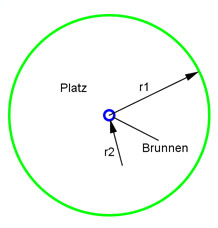

Flächenberechnungen Aufgabe 36 Ein runder Brunnen mit einem Radius von 3 m steht auf einem runden Platz mit einem Durchmesser von 60 m. Wie groß ist die zu pflasternde Fläche A?  r1 = Radius des Platzes r2 = Radius des Brunnens A = π * (r1² - r2²) = π * (30² m² - 3² m²) = A = 3,14 * (900 m² - 9 m²) = 2 797,7 m²